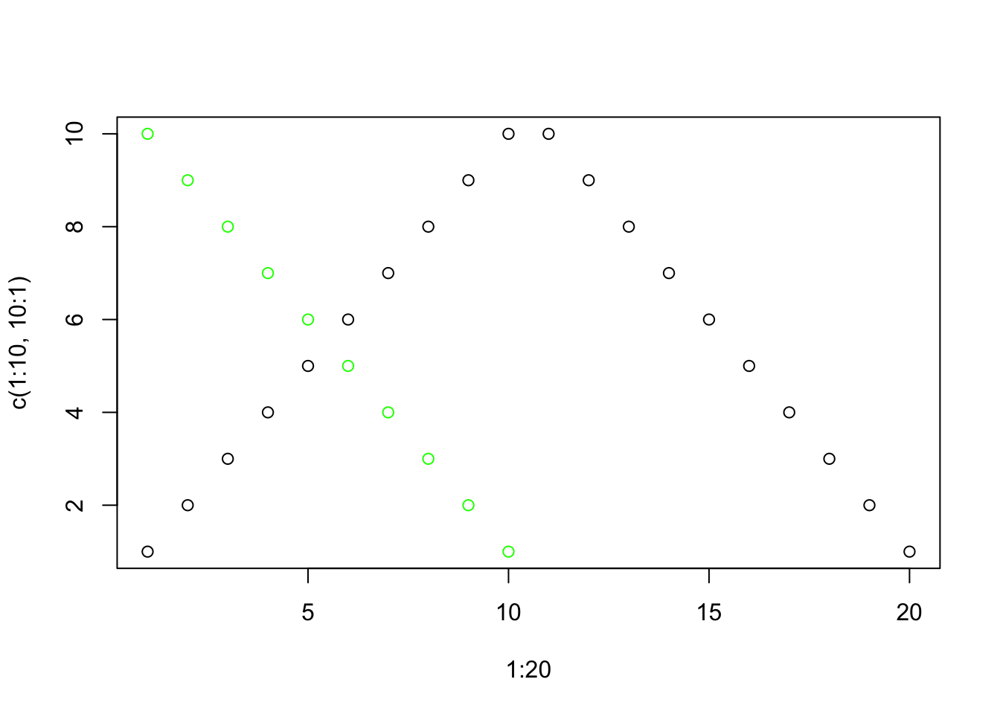
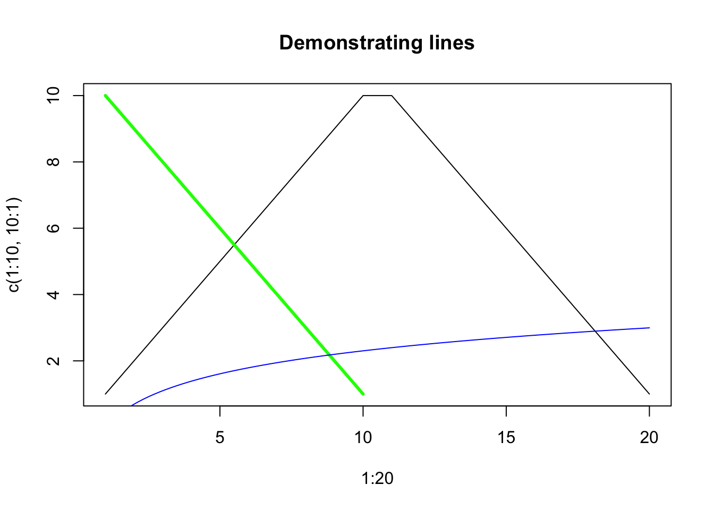
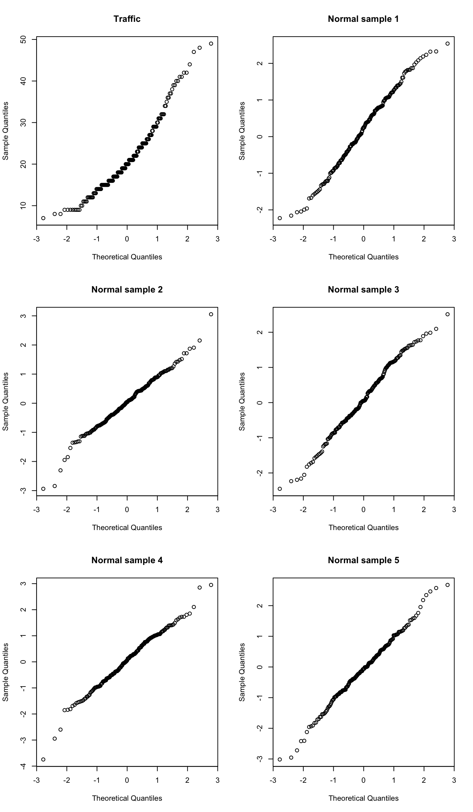

Chapter 2 Plotting
2.1 Histograms
The histogram is a nice tool for roughly visualizing the distribution a numerical vector.
Exercise: Run the following code, then look at the help files for hist and truehist (which is in the MASS library). Describe their differences.
library(MASS)
class(Traffic)
names(Traffic)
Traffic$y
hist(Traffic$y)
truehist(Traffic$y)2.2 Scatterplots
Two vectors can be put together into a scatterplot using the plot command. The points command adds points to an existing plot. The col attribute allows you to set the color of the points (used in either plot or points).

To draw connected line segments instead of points, use type="l"; to add line segments to an existing plot, use lines (for a pair of vectors) or curve (for a function).
plot(1:20, c(1:10, 10:1), type="l",
main="Demonstrating lines")
lines(1:10, 10:1, col="green", lwd=3) # lwd sets line width
curve(log(x), col="blue", add=TRUE)
The distribution of a numerical vector can be checked for normality using a Normal quantile plot which is a scatterplot of the vector’s ordered values paired with idealized ordered values of a truly Normal sample. The R command is qqnorm; for example:
y <- MASS::Traffic$y
par(mfrow=c(3, 2))
qqnorm(y, main="Traffic")
for(i in 1:5) {
qqnorm(rnorm(length(y)), main=paste("Normal sample", i))
}
The par(mfrow=c(3, 2)) command told the interpreter to place the next six plots together in a 3 by 2 grid.